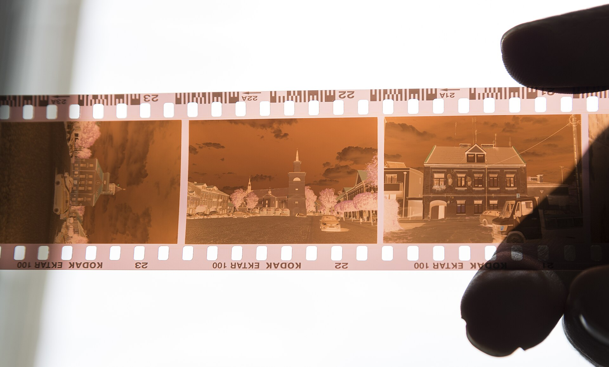
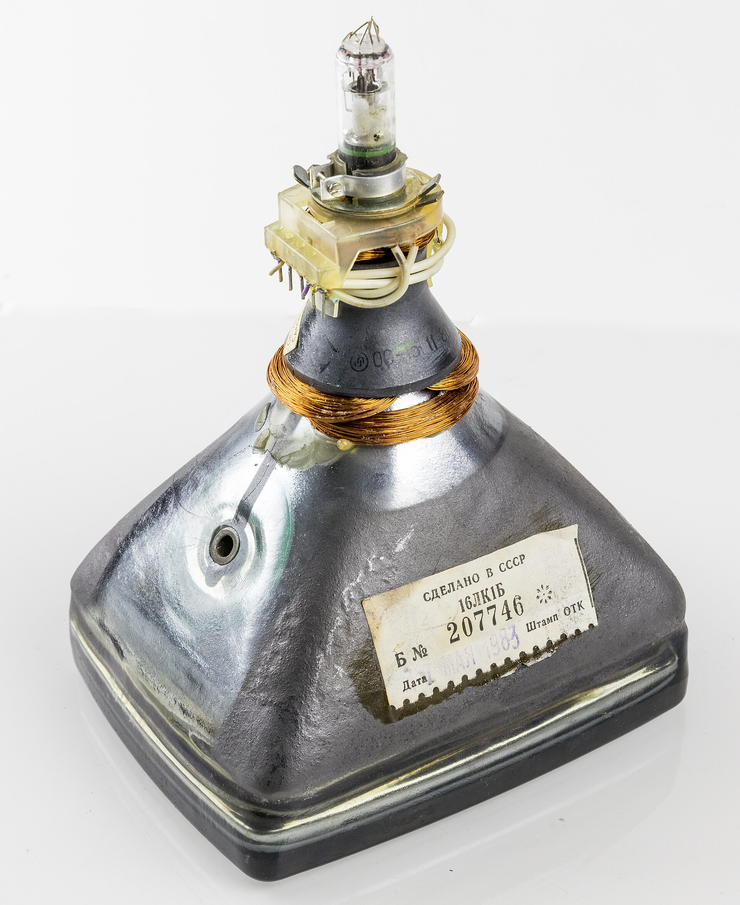

Formatsthe same source4
- 1080pdirect
- 720pproxychosen
- 480pdirect
- Audiodirect
needsProxy is decided per rendition.
Paste a stream, a file or a YouTube link and watch it here. No account, no install, no re-upload.
Play a sampleDirect files · HLS · 1,755 extractors · no account
Viewer watches links. One box for a file, a stream, a channel or a page, and a player that explains itself when a site says no.
Built for links. One box takes a URL, an .m3u8 playlist, a file name or a drop, and plays it on this page. No library, no feed, no thumbnails to scroll. Just the link you came with and the player it deserved.
The browser comes first. Direct files and HLS play locally, decoded by the browser itself. When a site blocks that, the small Python server takes over and streams the bytes the CDN actually expects to see.
The failure is the feature. Most of the code is about the awkward cases: a Referer check, a cookie that never reaches the page, a signed link that expires mid-film, a format that needs a second request before the first byte moves.
Nothing is uploaded. The link goes to the server you configured and to the site it names. There is no account, no history and no analytics. The video plays, and that is the whole transaction.

Nothing here is a magic embed. The page resolves the link, then fetches what the browser is not allowed to.
A file or an .m3u8 plays here. Anything else is a question the browser cannot answer alone.
proxy is decided per rendition, not per site.
The CDN wants a Referer, a session cookie or a browser's user agent. The backend replays the headers and hands back one origin.
GET /v/…/720.mp4 Referer: https://example.com/watch User-Agent: Mozilla/5.0 … Cookie: session=… (server-side) Range: bytes=0-1048575
The page never sees the cookie; the backend does.
Click the time and type 3:21 or 1:02:03; the player seeks there. Arrows move five seconds, J and L ten.
Typed 3:21; the bar jumped to 58%.
needsProxy is decided per rendition.
3:21, 1:54, 1:02:03 and 194 all work.
N plays the next source in the list.
C toggles every track the source offers.
Saved under the file name the source uses.
The full list is behind the ? in the player.
The source refused the proxy too. Open the original page in a new tab, or pass cookies from an account in that region.
Error 403 · region blocked
Formats Every rendition the source offers, with proxy or direct decided per row.
Direct files and HLS play in the browser alone. Everything else is resolved by the backend, through yt-dlp, the adapters and a generic fallback.
Newsrooms, lecture halls, public archives, conference sites, local stations, the occasional museum: all of them sit in the same extractor list. If a site is not there, the generic resolver tries the page's own markup before giving up.
Browsers play files and HLS. They do not play a YouTube page, and most sites will not hand a third-party page their stream. Viewer is the small, honest machine in between, and it says why when a link will not play.
It started as one paste box for lecture recordings and old concert tapes: the links that open in a browser but not in a player. Over time the edge cases became the product: the Referer check, the expiring signed URL, the CDN that wants a cookie in a header a page is not allowed to set.
There is no account and no feed. One link, one player, and a list of what actually works. When a stream fails, the player says what wall it hit, and the report goes to the issue queue with the link and the error, not a thumbs-down.
james3124 maintainer, Viewer

Only for links that hide their stream. Direct files and HLS play in the browser alone; YouTube, Vimeo, TikTok, Twitch, Reddit and the rest are resolved by the Python process.
The CDN wants a Referer, a Cookie or a User-Agent that a browser cannot set on that request. The backend replays those headers and serves the bytes from one origin.
Export cookies.txt from a logged-in browser and point YTDLP_COOKIES at it, or base64 the file into VIEWER_COOKIES_B64. The cookies stay on the server and are never sent to the page.
Viewer will not touch a paywall or a login. Use cookies exported from an account in the right region, or open the original page in a new tab and watch it there.
A pasted link goes to the server you configured and to the site it names. Cookies you provide stay on the server; the browser's own cookies are never replayed to a third-party CDN.
Yes. The download button saves the quality on screen through the backend, with the headers the CDN expects, and keeps the file's own name and extension.
No account and no analytics. The home screen can carry one ad slot; hls.js is served with the page rather than from a CDN, so a DNS filter cannot stop playback.
python3 server.py serves the page and the API on port 8080. The Render blueprint, the Vercel functions and the environment variables are laid out in the README.
No account, no tracking, no history. Here is the whole thing, in three notes.
No account, no analytics. Viewer asks for no email, sets no tracking cookie, and keeps no feed, history or recommendation. The screen shows the link you asked for and nothing else.
Cookies stay on the server. A cookies.txt you provide is read by the backend and never served to the page; the browser's own cookies are not replayed to a third-party CDN.
One log line, one ad slot. A failed playback posts its error text to /api/ui-log, rate-limited. AdSense is the page's only third-party script; the home screen can carry one ad slot.
Send it to us. The form opens a GitHub issue draft with the link already in it, so no account is needed.
The draft opens on GitHub; you press Submit there. Nothing is sent from this page.